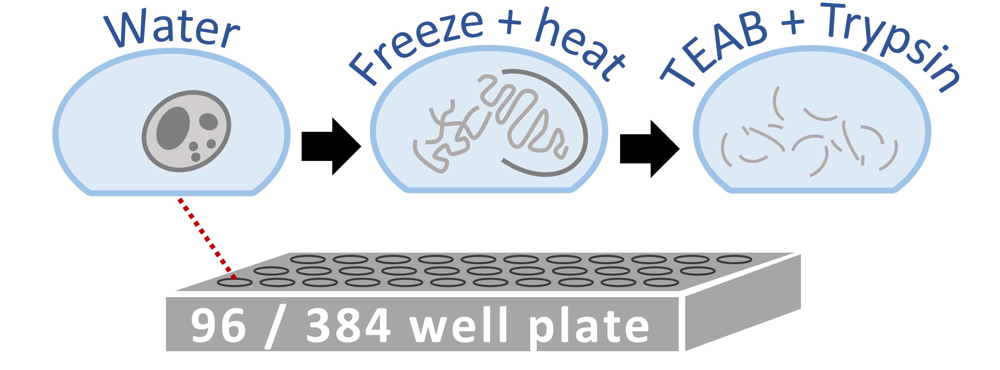

Supporting Information
Automated sample preparation for high-throughput single-cell proteomics
Preprints SCoPE-MS DART-ID mPOP
Data Webs SCoPE-MS DART-ID mPOP
Data RAW data MaxQuant txt Data Plots ProteomeXchange MassIVE
Summary
A major limitation to applying quantitative LC-MS/MS proteomics to small samples, such as single cells, are the losses incured during sample cleanup. To relieve this limitation, we developed a Minimal ProteOmic sample Preparation (mPOP) method for culture-grown mammalian cells. mPOP obviates cleanup and thus eliminates cleanup-related losses while expediting sample preparation and simplifying its automation. Bulk SILAC samples processed by mPOP or by conventional urea-based methods indicated that mPOP results in complete cell lysis and accurate relative quantification. We integrated mPOP lysis with the Single Cell ProtEomics by Mass Spectrometry (SCoPE-MS) sample preparation, and benchmarked the quantification of such samples on a Q-exactive instrument. The results demonstrate low noise and high technical reproducibility. Then, we FACS sorted single U-937, HEK-293, and mouse ES cells into 96-well plates and analyzed them by automated mPOP and SCoPE-MS. The quantified proteins enabled separating the single cells by cell-type and cell-division-cycle phase.Minimal ProteOmic sample Preparation (mPOP)

Explore the Mass-spec data
Automated sample preparation for high-throughput single-cell proteomics
bioRxiv DOI: 10.1101/399774 PDF | RAW Data @ MassIVE | RAW Data @ ProteomeXchange | SCP2018 Talk